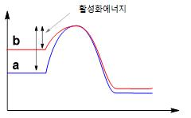

해설 2
2-1 채점기준
- 활성화에너지의 상대적 크기를 설명 할 수 있는가?
- 반응물의 분자 구조에 따른 안정성을 비교 할 수 있는가?
- 반응 속도를 반응물의 엔탈피 차이로 인한 활성화에너지 크기 비교를 통해 설명하는가?
2-2 예시 답안
에틸렌옥사이드의 경우 디메틸에테르와 다르게 고리 구조를 가지고 있다. 이 고리 구조는 강한 전자쌍 반발 때문에 불안정한 상태이다. 그래서 에틸렌옥사이드의 엔탈피가 디메틸에테르의 엔탈피보다 높다. 그로인해 활성화에너지가 에틸렌옥사이드이가 디메틸에테르보다 작으므로 반응속도가 빠르다.

2-3 채점 준거
- 삼각고리 화합물의 구조와 안정성을 설명한 경우 1점.
- 활성화에너지의 상대적 크기를 제시한 경우 1점.
- 반응물의 엔탈피와 활성화 에너지를 연관시켜 설명한 경우 1점.